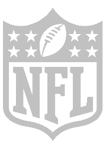
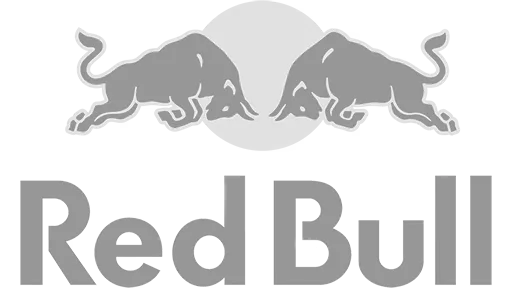
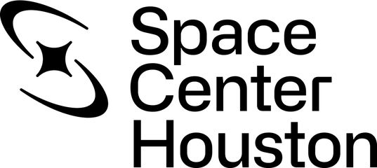
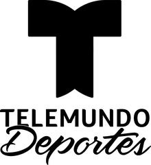
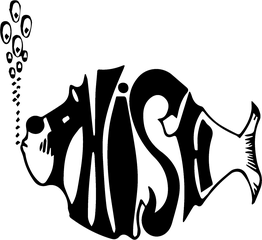

I help brands find the idea worth rallying behind, then concept, direct and execute the campaigns, identities and experiences that turn audiences into fans.
I build culturally relevant creative campaigns that extend across broadcast, social, digital, and in-person experiences.
I bridge creativity and emerging technology to develop innovative content, workflows, and experiences powered by AI.





Let's make it